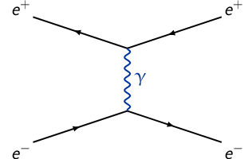
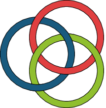
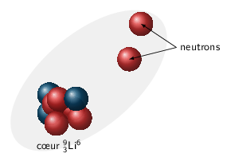

TD7 : Réactions nucléaires
1 Introduction
 Les mesures de section efficace sont des mesures typiques de physique des
particules. Elles traduisent la probabilité de passage d'un état initial de la
matière \(\psi_i\) à un état final \(\psi_f\).
Les mesures de section efficace sont des mesures typiques de physique des
particules. Elles traduisent la probabilité de passage d'un état initial de la
matière \(\psi_i\) à un état final \(\psi_f\).
Un détecteur couvrant un angle solide \(d\Omega\) et situé à un angle \(\theta\) par rapport à l'axe du faisceau détectera ainsi \(dn\) particules par unité de temps
\begin{align*} dn=\underbrace{\text{flux incident}}_{\substack{\text{nbr. particules incidentes}\\\text{/unité de temps}}}\times\underbrace{\text{ nbr. de noyaux cible}}_{\substack{\text{nbr. centre diffuseurs}\\\text{/unité de volume}}}\times\text{ épaisseur cible}\times\frac{d\sigma}{d\Omega}d\Omega \end{align*}où \(d\Omega\) = surface de détection/(distance cible-détecteur)2 = \(\sin\theta d\theta d\phi\) avec \(\theta\in[0,\pi]\) et \(\phi\in[0,2\pi]\). Le terme \(\left.\frac{d\sigma}{d\Omega}\right|_\theta\) est la section efficace différentielle à l'angle \(\theta\) et s'exprime en barn par stéradian où 1 barn = 10-24 cm2 = 10-28 m2=100 fm2. De la section efficace différentielle, on déduit la section efficace totale \(\sigma\) en intégrant sur l'angle solide total \(d\Omega\) : \(\sigma=\int\frac{d\sigma}{d\Omega}d\Omega\) et correspond à la probabilité qu'une particule incidente ait intéragi avec les particules constitutives de la cible.
\begin{align*} dn&=\phi\times N\times e\times\frac{d\sigma}{d\Omega}d\Omega\text{ ou }n=\phi\times N\times e\times\sigma\\ \text{avec }&N=\frac{\text{nbr. centre diffuseurs}}{\text{unité de volume}}=\rho\times\frac{\mathcal{N}}{M_\text{at.}}\simeq\rho\times\frac{\mathcal{N}}{A}\\ \text{où }&\rho = \text{masse volumique ou densité volumique (g/cm\(^{3}\))}\\ &\mathcal{N} = \text{nombre d'Avogadro}=\unit[6.02\,10^{23}]{mol}^{-1}\\ &A = \text{nombre de nucléons} = \text{masse molaire (g/mol)} \end{align*}Remarques :
- l'épaisseur de la cible est souvent donnée en terme de densité surfacique exprimée en g/cm2 et correspond donc au produit de la densité volumique par l'épaisseur physique de la cible.
- le flux \(\phi\) incident est parfois donné en terme d'intensité du faisceau (exprimé en Ampères). Le nombre de particules incidentes par unité de temps devient \begin{align*} \phi=\frac{I}{Ze}\text{ où \(e\) correspond à la charge élémentaire} \end{align*}
2 Accélérateur, section efficace et luminosité
- 21H+ 6329Cu→ 21H+ 6329Cu
\begin{align*}
dn=\phi Ne\frac{d\sigma}{d\Omega}d\Omega=\phi\frac{\mathcal{N}\rho_e}{A_\text{cible}}\frac{d\sigma}{d\Omega}d\Omega
\end{align*}
où \(\phi=\phi'\pi R^2\) et \(\phi'=6\,10^{10}\,\text{s}^{-1}\text{.cm}^{-2}\). Le nombre de deutons détectés est
\begin{align*} \left.dn\right|_{30^\circ}&=\phi\frac{\mathcal{N}\rho_e}{A_\text{cible}}\left.\frac{d\sigma}{d\Omega}\right|_{\theta=30^\circ}\frac{S_\text{détecteur}}{d^2_\text{cible-détecteur}}\\ &=6\,10^{10}\times\pi 1^2\times\frac{6.02\,10^{23}\times2\,10^{-3}}{63}\times0.1\,10^{-24}\times\frac{4\times2}{100^2}\\ &=\unit[287]{deutons/s} \end{align*} - 31H+ 94Be→ 32He+ 93Li
- Le flux incident \(\phi\) s'exprime en fonction de l'intensité \(I\) du faisceau
\begin{align*}
\phi=\frac{I}{Ze}
\end{align*}
Par ailleurs, le nombre de noyaux détectés \(n=2000\) soit
\begin{align*} n&=\phi\times N\times e\times\sigma=2000\\ &=\frac{I}{Ze}\times\frac{\mathcal{N}\rho_e}{A_\text{cible}}\times\sigma\\ \sigma&=\frac{n\times A_\text{cible}\times Ze}{I\times\mathcal{N}\times\rho_e}\\ \sigma&=\unit[9.6\,10^{-29}]{cm}^2=\unit[9.6\,10^{-5}]{barn}=\unit[96]{microbarn} \end{align*} - Principe expérimental

L'énergie totale est fixé par l'énergie cinétique du faisceau incident (+ les énergies de masse de la cible et du faisceau) : la distribution en énergie des noyaux de 32He présente des raies correspondant aux niveaux en énergie de 32He (ou 93Li) → énergies quantifiées
- Le flux incident \(\phi\) s'exprime en fonction de l'intensité \(I\) du faisceau
\begin{align*}
\phi=\frac{I}{Ze}
\end{align*}
- La luminosité \(\mathcal{L}\) s'exprime comme le rapport du nombre de
particules détectés par unité de temps sur la section efficace
\begin{align*}
\mathcal{L}=\frac{n}{\sigma}
\end{align*}
Ainsi, une réaction/interaction de section efficace \(\sigma\) sera d'autant "mieux" observée que la luminosité sera grande et donc que le nombre de particules résultantes de cette réaction/interaction sera conséquente. L'unité de luminosité est donc
\begin{align*} \left[\mathcal{L}\right]=\frac{\left[n\right]}{\left[\sigma\right]}=T^{-1}.L^{-2} \end{align*}La luminosité dépend de l'intensité de chacun des faisceau entrant en collision
\begin{align*} \mathcal{L}&=\frac{2\pi R}{c}\times\frac{I_1\,I_2}{e^2S}\\ &=\frac{2\pi\times4.5\,10^3}{3\,10^8}\times\frac{9\,10^{-6}}{(1.6\,10^{-19})^2\times0.5\,10^{-6}}\\ &=6.63\,10^{34}\,\text{m}^2\text{.s}^{-1}=6.63\,10^{30}\,\text{cm}^2\text{.s}^{-1} \end{align*} - Diffusion Bhabha \(e^+e^-\to e^+e^-\)
\begin{align*} \frac{d\sigma}{d\Omega}=\frac{16\alpha^2(\hbar c)^2}{E^2\theta^4} \end{align*}

avec \(E=\unit[90]{GeV}\) et \(\alpha=\frac{e^2}{4\pi\epsilon_0\hbar c}\) où \(\hbar c=\unit[197.3]{MeV.fm}\)
- La section efficace totale \(\sigma\) est égale à
\begin{align*}
\sigma&=\int\frac{d\sigma}{d\Omega}d\Omega\\
&=\int_0^{2\pi}\int_{\theta_1}^{\theta_2}\sin\theta d\theta d\phi\frac{d\sigma}{d\Omega}\\
&=2\pi\frac{16\,\alpha^2(\hbar c)^2}{E^2}\int_{\theta_1}^{\theta_2}\frac{\sin\theta}{\theta^4}d\theta
\end{align*}
Dans la mesure où \(\theta\ll1\), \(\sin\theta\sim\theta\) soit
\begin{align*} \sigma=2\pi\frac{16\,\alpha^2(\hbar c)^2}{E^2}\int_{\theta_1}^{\theta_2}\frac{d\theta}{\theta^3} \end{align*}avec \(\theta_1=3^\circ=\unit[0.0524]{rad}\) et \(\theta_2=8^\circ=\unit[0.1396]{rad}\).
\begin{align*} \sigma&=\frac{32\pi\,\alpha^2(\hbar c)^2}{2E^2}\times\underbrace{\left[\frac{1}{\theta_1^2}-\frac{1}{\theta_2^2}\right]}_{=312.9}\\ &=\frac{32\pi\times e^4\times\cancel{(\hbar c)^2}}{2\times(4\pi\epsilon_0\cancel{\hbar c})^2\times E^2}\times312.9\\ &=\frac{e^2}{\pi\epsilon_0^2\left.E\right|_\text{eV}^2}\times312.9=\unit[4\,10^{36}]{m}^2=\unit[4\,10^{-12}]{barn}=\unit[4]{picobarn} \end{align*} - Le nombre d'interaction par seconde est
\(n=\frac{950}{3600}=\unit[0.2639]{s}^{-1}\). La luminosité est égale à
\begin{align*}
\mathcal{L}=\frac{n}{\sigma}=\frac{0.2639}{4\,10^{36}}=6.553\,10^{34}\,\text{m}^{-2}\text{.s}^{-1}
\end{align*}
Remarques : La luminosité instantanée du LHC est voisine de 1034 cm-2.s-1 soit 10-2 pb-1.s-1. À titre de comparaison, le collisionneur \(p\bar{p}\) du Tevratron avait une luminosité de 3.2 1032 cm-2.s-1 ce qui intégré sur son temps d'acquisition de 2001 à 2008 a fourni une luminosité intégrée de 5000 pb-1. En un peu moins d'une semaine de prise de données, le LHC a atteint la même luminosité intégrée que le Tevatron.
- La section efficace totale \(\sigma\) est égale à
\begin{align*}
\sigma&=\int\frac{d\sigma}{d\Omega}d\Omega\\
&=\int_0^{2\pi}\int_{\theta_1}^{\theta_2}\sin\theta d\theta d\phi\frac{d\sigma}{d\Omega}\\
&=2\pi\frac{16\,\alpha^2(\hbar c)^2}{E^2}\int_{\theta_1}^{\theta_2}\frac{\sin\theta}{\theta^4}d\theta
\end{align*}
- La luminosité \(\mathcal{L}\) s'exprime comme le rapport du nombre de
particules détectés par unité de temps sur la section efficace
\begin{align*}
\mathcal{L}=\frac{n}{\sigma}
\end{align*}
3 Section efficace et neutrons thermiques
- \(n_\text{th.}+^{10}_{5}\text{B}\rightarrow\alpha+^{7}_{3}\text{Li}\)
Calcul de la chaleur de réaction \(Q\)
\begin{align*} Q&=m_nc^2+m_{^{10}_{5}\text{B}}c^2-m_\alpha c^2-m_{^{7}_{3}\text{Li}}c^2\\ &=939.6 + 9324.495 - 3727.398 - 6533.877=\unit[2.82]{MeV}>0 \end{align*}La réaction est donc exoénergétique ou spontanée et ne requiert pas nécessairement d'énergie cinétique pour les neutrons \(T_{n_\text{th.}}\ll1\sim0\). On considèrera la réaction se faisant au repos \(T_{n_\text{th.}}=T_{^{10}_{5}\text{B}}\sim0\). La conservation de l'impulsion implique donc que \(\vv{p}_\alpha=-\vv{p}_{^{7}_{3}\text{Li}}\) soit
\begin{align*} p_\alpha c&=p_{^{7}_{3}\text{Li}}c\\ T_\alpha^2+2T_\alpha\,m_\alpha c^2&=T_{^{7}_{3}\text{Li}}^2+2T_{^{7}_{3}\text{Li}}\,m_{^{7}_{3}\text{Li}}c^2 \end{align*}La conservation de l'énergie implique quant à elle
\begin{align*} E_n+E_{^{10}_{5}\text{B}}&=E_\alpha+E_{^{7}_{3}\text{Li}}\\ m_nc^2+m_{^{10}_{5}\text{B}}c^2&=m_\alpha c^2+m_{^{7}_{3}\text{Li}}c^2+T_\alpha+T_{^{7}_{3}\text{Li}}\\ Q&=T_\alpha+T_{^{7}_{3}\text{Li}} \end{align*}soit
\begin{align*} T_\alpha^2+2T_\alpha\,m_\alpha c^2&=\left(Q-T_\alpha\right)^2+2\left(Q-T_\alpha\right)\,m_{^{7}_{3}\text{Li}}c^2\\ T_\alpha\times\left(2m_\alpha c^2+2m_{^{7}_{3}\text{Li}}+2Q\right)&=Q^2+2Qm_{^{7}_{3}\text{Li}}c^2\\ T_\alpha&=\frac{Q^2+2Qm_{^{7}_{3}\text{Li}}c^2}{2\left(m_n c^2+m_{^{10}_{5}\text{B}}c^2\right)}\\ &=\unit[1.8]{MeV} \end{align*} - \(n+^{11}_{5}\text{B}\rightarrow\alpha+^{8}_{3}\text{Li}\)
Calcul de la chaleur de réaction \(Q\)
\begin{align*} Q&=m_nc^2+m_{^{11}_{5}\text{B}}c^2-m_\alpha c^2-m_{^{8}_{3}\text{Li}}c^2\\ &=939.6 + 10252.615 - 3727.398 - 7471.417=\unit[-6.6]{MeV}<0 \end{align*}i.e. une réaction endoénergétique qui, pour se réaliser, implique que les neutrons aient une énergie cinétique minimale \(T_S\) de
\begin{align*} T_S&=\frac{|Q|\times\Sigma m_{if}c^2}{2m_{^{11}_{5}\text{B}}c^2}\\ &=\unit[7.21]{MeV}\gg\unit[2.5\,10^{-2}]{eV} \end{align*} - Le nombre de particules α détectées se déduit de l'expression suivante
\begin{align*}
dn_\alpha=\phi_{n_\text{th.}}\times\frac{\mathcal{N}\times\rho_e}{A_\text{cible}}\times\frac{d\sigma}{d\Omega}d\Omega
\end{align*}
Le flux incident de neutrons thermiques est donc
\begin{align*} \phi_{n_\text{th.}}=\frac{dn_\alpha\,A_\text{cible}}{\mathcal{N}\times\rho_e\times\frac{d\sigma}{d\Omega}d\Omega} \end{align*}Bore naturel → 19.8% 10B+80.2% 11B. Le nombre de nucléons moyen de la cible est donc
\begin{align*} A_\text{cible}=0.198\times10+0.802\times11=10.802 \end{align*}Par ailleurs, l'épaisseur de cible \(\rho_e=\unit[2.34\,10^{-4}]{g/cm}^2\) est seulement constituée de 19.8% de 10B nécessaire à la réaction. On introduit donc une épaisseur "effective" de 10B correspondant à 19.8%\(\cdot\rho_e\). Finalement la section efficace différentielle \(\frac{d\sigma}{d\Omega}\) est isotrope soit \(\frac{d\sigma}{d\Omega}=\frac{\sigma}{4\pi}\). On déduit ainsi le flux par seconde \(\phi_{n_\text{th.}}\)
\begin{align*} \phi_{n_\text{th.}}&=\frac{\frac{473}{60}\times10.802}{6.02\,10^{23}\times0.198\times2.34\,10^{-4}\times\frac{3840\,10^{-24}}{4\pi}\times\frac{5}{100^2}}\\ &=\unit[2\,10^7]{s}^{-1} \end{align*}La surface de la cible étant de 10 cm2, le flux par seconde et par unité de surface est donc \(F=\frac{\phi}{S_\text{cible}}=2\,10^6\,\text{cm}^{-2}\text{.s}^{-1}\).
- \(T_n=\unit[13]{MeV}>T_S=\unit[7.21]{MeV}\) et
\(\left.\frac{d\sigma}{d\Omega}\right|_{20^\circ}=\unit[3.8]{mb/sr}\)
- Pour calculer la section efficace totale \(\sigma\), il s'agit d'intégrer la section efficace différentielle sur 4π stéradian : il faut donc connaitre la dépendance angulare \((\theta,\phi)\) de \(\frac{d\sigma}{d\Omega}\).
- \(\frac{d\sigma}{d\Omega}=\frac{K}{\sin\theta}\) avec \(K=\left.\frac{d\sigma}{d\Omega}\right|_{20^\circ}\sin\,20^\circ=\unit[1.3]{mb/sr}\). La section efficace totale devient \begin{align*} \sigma&=\int\frac{d\sigma}{d\Omega}d\Omega=\int_0^{2\pi}d\phi\int_0^\pi\frac{K}{\sin\theta}\sin\theta d\theta\\ &=2\pi^2\,K=\unit[25.65]{mb} \end{align*}
4 Section efficace et rayon d'interaction
- 11Li→ 9Be
- Le nombre de réactions \(n\) par unité de temps s'écrit
\begin{align*}
n&=\phi\times\rho_e\times\frac{\mathcal{N}}{A_\text{cible}}\times\sigma
\end{align*}
d'où
\begin{align*} \sigma&=\frac{N}{\phi}\times\frac{A_\text{cible}}{\mathcal{N}\rho_e}\\ &=\frac{10^5/600\times9}{10^4\times6\,10^{23}\times50\,10^{-3}}\\ \sigma(^{11}\text{Li}+^{9}\text{Be})&\simeq\unit[5\,10^{-24}]{cm}^2=\unit[5]{barn} \end{align*} - Soit le rayon du 9Be
\begin{align*}
R(^{9}\text{Be})=r_0\times A^{1/3}=\unit[1.25]{fm}\times9^{1/3}=\unit[2.6]{fm}
\end{align*}
La section efficace devient
\begin{align*} \sigma(^{11}\text{Li}+^{9}\text{Be})&=\pi\left(R(^{11}\text{Li})+R(^{9}\text{Be})\right)^2=\unit[5]{barn}=\unit[500]{fm}^2\\ R(^{11}\text{Li})&=\sqrt{\frac{\sigma}{\pi}}-R(^{9}\text{Be})\\ &=\sqrt{\frac{\unit[500]{fm}^2}{\pi}}-\unit[2.6]{fm}\\ &=\unit[10]{fm}\gg1.25\times11^{1/3}=\unit[2.78]{fm} \end{align*} - \(\sigma(^{9}\text{Li}+^{9}\text{Be})=\sigma(^{11}\text{Li}+^{9}\text{Be})/5\) d'où \begin{align*} R(^{9}\text{Li})&=\sqrt{\frac{\unit[100]{fm}^2}{\pi}}-\unit[2.6]{fm}\\ &=\unit[3.04]{fm}\gtrsim\unit[2.6]{fm} \end{align*}
- Le nombre de réactions \(n\) par unité de temps s'écrit
\begin{align*}
n&=\phi\times\rho_e\times\frac{\mathcal{N}}{A_\text{cible}}\times\sigma
\end{align*}
- \(^{10}\text{Li}\to^{9}\text{Li}+n\)
La chaleur de réaction \(Q\) est égale à
\begin{align*} Q&=m_{^{10}\text{Li}}c^2-m_{^{9}\text{Li}}c^2-m_{n}c^2\\ &=9347.3-8406.9-939.6=\unit[800]{keV} \end{align*}justifiant une réaction spontanée. Le Lithium 10 se désintègre ainsi presque instantanément en Lithium 9.
- Si on considère la réaction de cassure du 11Li en 10Li +
neutron, la chaleur de réaction est
\begin{align*}
Q&=m_{^{11}\text{Li}}c^2-m_{^{10}\text{Li}}c^2-m_{n}c^2\\
&=10285.9-9347.3-939.6=\unit[-1]{MeV}
\end{align*}
Le noyau de 11Li est donc stable et lié par intéraction forte. On peut modéliser ce noyau comme un c\oe ur de 9Li "entouré" de 2 neutrons. Ce système à trois corps est un noyau borroméen en référence aux armoiries de la famille italienne Borromée. En effet, de la même manière que casser un des anneaux libère les deux autres, rompre une liaison 9Li – neutron, brise instantanément la seconde : 11Li→ 9Li.
  - La seconde réaction n'est pas observable/mesurable du fait que 10Li devient instantanément un noyau 9Li. Seule la première réaction est observable et donc seul le rayon du 11Li est mesurable.
- \(^{10}\text{Li}\to^{9}\text{Li}+n\)
- Comparaison \(R_\text{int.}\) et modèle de la goutte liquide \(R_\text{gl}\)
\(A\) \(R_\text{gl}\) [fm] \(R_\text{int.}\) [fm] [%] 6 2.27 2.14 5.7 7 2.39 2.25 5.9 8 2.5 2.38 4.8 9 2.6 3.04 -16.9 10 2.69 \(-\) \(-\) 11 2.78 10 -259.7